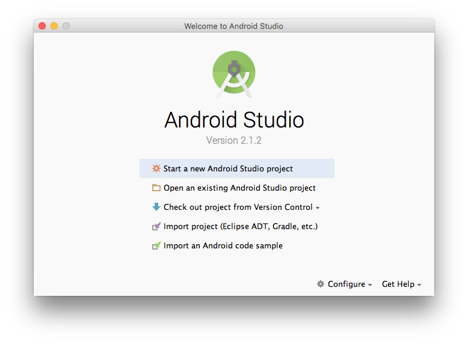
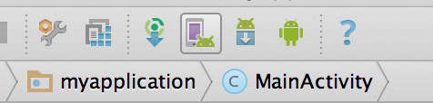
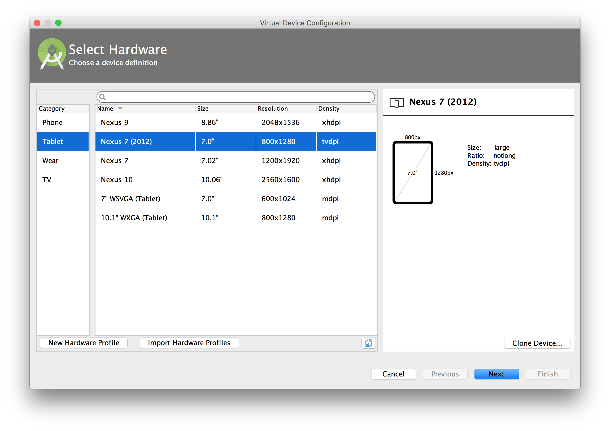
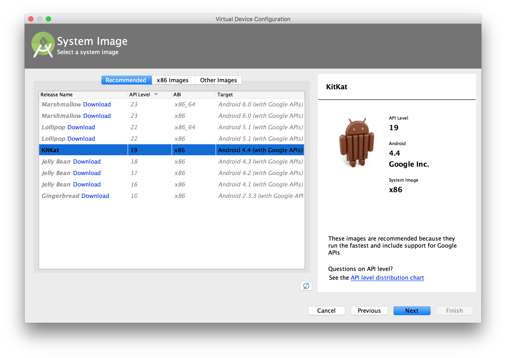

Neste codelab você irá aprender a construir seu primeiro aplicativo Android através da ferramenta Android Studio criada pelo Google e disponibilizada para o público em 2013.
O Android Studio oferece as ferramentas mais rápidas para a criação de aplicativos em todos os tipos de dispositivos Android, incluindo dispositivos Poynt.
Recursos como edição de código de nível global, depuração, ferramentas de desempenho, sistema flexível de compilação e criação/implantação instantâneas permitem que você se concentre na criação de aplicativos exclusivos de alta qualidade.
A primeira vez que você cria um projeto no Android Studio, ele vai criar seu ambiente de desenvolvimento e ajustar todos os arquivos de acordo com as opções colocadas nas fases anteriores. É possível que este processo dure até um minuto, dependendo do computador que você está utilizando.
É importante que você se entenda a estrutura de pastas e arquivos dentro de um projeto no Android Studio, mas não é preciso decorar a função de cada um. Use esta página como guia durante codelab.
MainActivity.javaEste arquivo aparece assim que o assistente de criação de um novo projeto finaliza. Ele contém a definição de classe da atividade que você criou no passo anterior. Quando você construir (Build) e rodar o app, esta atividade inicia e carrega o arquivo de layout que diz "Hello World".
activity_main.xmlEste arquivo XML define o layout da atividade. Contém um elemento TextView com o texto "Hello world!"
AndroidManifest.xmlO arquivo de manifesto descreve as características fundamentas do app e define cada um de seus componentes. Você vai abrir este arquivo assim que for desenvolvendo os codelabs e adicionair mais componentes ao seu app.
build.gradleO Android Studio usa o Gradle para compilar e construir seu app. Há um arquivo build.gradle para cada módulo de seu projeto, assim como um arquivo build.gradle para o projeto como um todo. É comum que neste processo de criação de apps você esteja interessado apenas no build.gradle do módulo. É aqui onde as dependências do seu app são configradas, inclusive as configurações padrões:
compiledSdkVersion é a versão da plataforma com a qual você irá compilar seu aplicativo. Por padrão, isso é definido como a última versão do Android disponível no seu SDK. Por padrão, isso é definido como a última versão do Android SDK instalado em sua máquina de desenvolvimento. Você ainda pode construir seu aplicativo para suportar as versões mais antigas, mas essa configuração para a versão mais recente permite ativar novos recursos e otimizar seu aplicativo para uma grande experiência do usuário sobre os mais recentes aparelhos.applicationId é o nome do pacote totalmente qualificado para a sua aplicação que especificou no assistente New ProjectminSdkVersion é a versão SDK mínimo especificado durante o assistente New Project. Esta é a versão mais antiga do Android SDK que seu aplicativo suporta.targetSdkVersion indica a maior versão do Android com o qual você tenha testado sua aplicação. À medida que novas versões do Android se tornam disponíveis, você deve testar seu aplicativo na nova versão e atualizar este valor para corresponder ao nível API mais recente e, assim, tirar proveito dos novos recursos da plataforma.Note que as subpastas /res contém os recursos para seu app:
drawable-/ Diretório para os recursos drawable, ícones de lançamento para as diferentes densidades de tela
layout/Diretório para arquivos que definem a interface de usuário do seu app como activity_main.xml discutido acima, que descreve a layout básico para a classe Main Activity.
menu/Diretório que define os menus de seu app
minimap/Ícones de abertura residem na pasta minimap/ ao invés da pasta drawable/. Esta pasta contém a imagem ic_launcher.png que é apresentada quando você roda seu app padrão.
values/Diretório para outros arquivos XML que contém uma coleção de recursos, como string e definições de cores.
Para que você possa testar se seu app está realizando as funções que você programou de maneira correta, há duas formas de testar na prática:
Para criar um novo aparelho a ser emulado na máquina, clique no ícone de um celular com um android em baixo. Se você mantiver o mouse em cima deste botão, aparecerá o texto AVD Manager



Finalize a criação de uma nova imagem de emulador confirmando as opções dos passos anteriores clicando em Finish.
Feche a tela do AVD Manager agora que você já criou seu emulador e clique no botãopara compilar seu aplicativo e executá-lo em seu emulador. É comum que o processo de compilação do código e carregamento do emulador tome mais de um minuto. Use esse tempo para comemorar seu primeiro app Android! :D